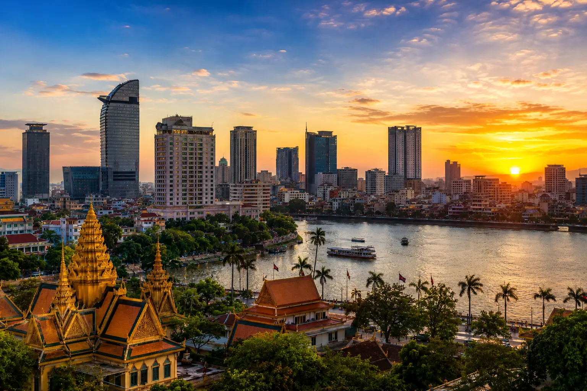
CITY
Phnom Penh
The bustling riverside capital. Experience a vibrant mix of tragic history, modern skyline, and the majestic Royal Palace.
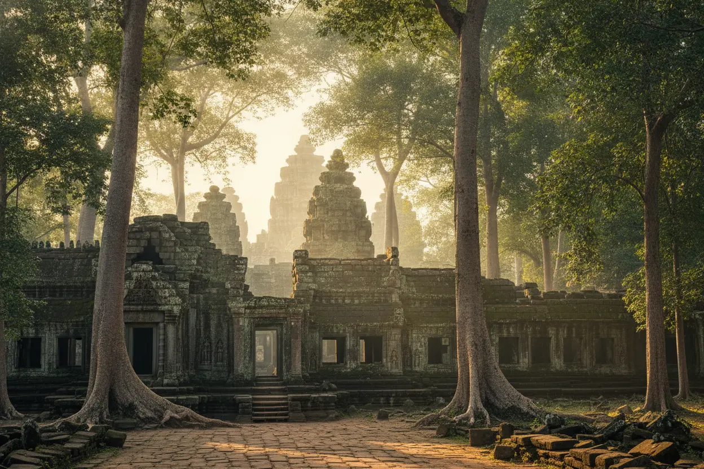
HERITAGE CENTER
Siem Reap
The Gate to Ancient Ruins. Home to the legendary Angkor Wat and countless temples reclaimed by the jungle.

HERITAGE CENTER
Preah Vihear
The clifftop temple sanctuary. Marvel at an ancient Khmer masterpiece perched spectacularly on the edge of the Dângrêk Mountains.

HERITAGE CENTER
Kampong Thom
The cradle of early empires. Wander through the pre-Angkorian brick towers of Sambor Prei Kuk, hidden deep in the forest.

HERITAGE CENTER
Battambang
Art, heritage, and bat caves. Ride the famous bamboo train and explore Cambodia’s most artistic French-colonial city.

HERITAGE CENTER
Banteay Meanchey
The forgotten jungle fortress. Explore the massive, sprawling ruins of Banteay Chhmar temple far off the beaten path.

HERITAGE CENTER
Oddar Meanchey
Echoes of recent history. Traverse the rugged northern borderlands that served as the final stronghold of the Khmer Rouge.
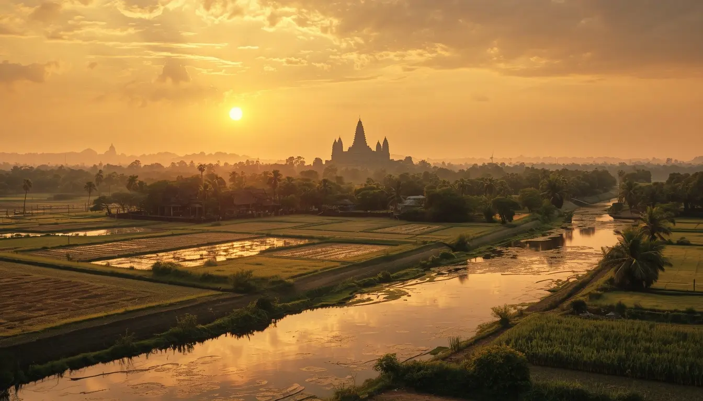
HERITAGE CENTER
Takeo
The ancient soul of Cambodia. Journey by boat to the oldest pre-Angkorian archaeological sites in the country.
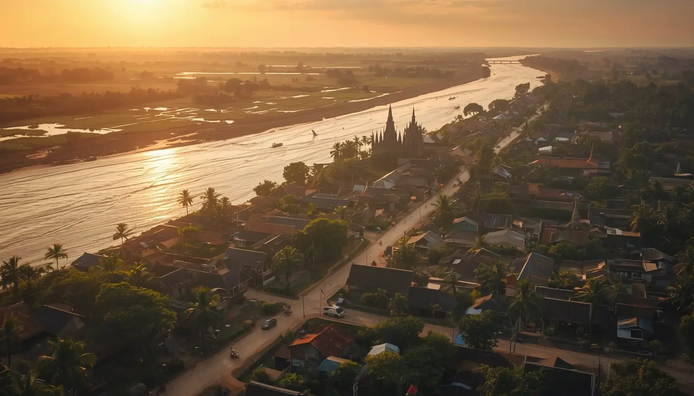
HERITAGE CENTER
Kandal
The ancient royal capital. Climb the sacred hills of Oudong where past kings rest in magnificent, towering stupas.

HERITAGE CENTER
Kampong Cham
Colonial charm on the Mekong. Cross the iconic bamboo bridge and visit ancient temples nestled in endless rubber plantations.

HERITAGE CENTER
Tboung Khmum
Legends and red soil lands. Explore a province rich in local folklore, historic battles, and vast agricultural heritage.

HERITAGE CENTER
Prey Veng
The ancient kingdom of the east. Trace the roots of the early Funan rise amid endless, fertile rice plains.

HERITAGE CENTER
Svay Rieng
The bustling border gateway. Experience a vibrant trading hub surrounded by peaceful, flat wetlands.
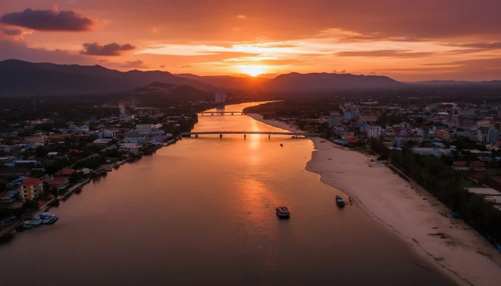
COLONIAL CHARM
Kampot
Mist Covered Hills & French Heritage. Discover the quiet charm of riverside life and historic architecture.

BEACH
Preah Sihanouk (Sihanoukville)
Gateway to island paradises. Discover white-sand beaches, lively nightlife, and the crystal-clear waters of Koh Rong.
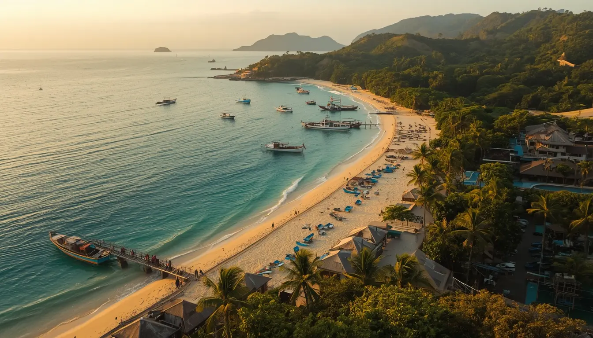
BEACH
Kep
Seaside serenity and crab markets. Relax in Cambodia's quietest coastal escape, famous for fresh seafood and ocean sunsets.

BEACH
Koh Kong
Where the cardamoms meet the sea. Explore vast mangrove forests, isolated beaches, and untamed coastal wilderness.

NATURAL WILD
Mondulkiri
Wilderness and Wildlife. Experience the raw beauty of Cambodia's highlands, waterfalls and elephant sanctuaries.
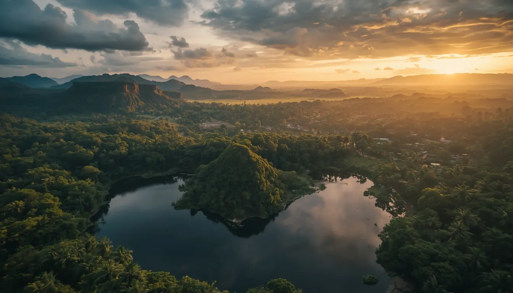
NATURE
Ratanakiri
Volcanic lakes and indigenous culture. Trek through remote highland jungles and swim in the emerald waters of Yeak Laom.

NATURE
Stung Treng
The flooded forests of the Mekong. Uncover a remote eco-tourism paradise where massive rivers converge near the Lao border.
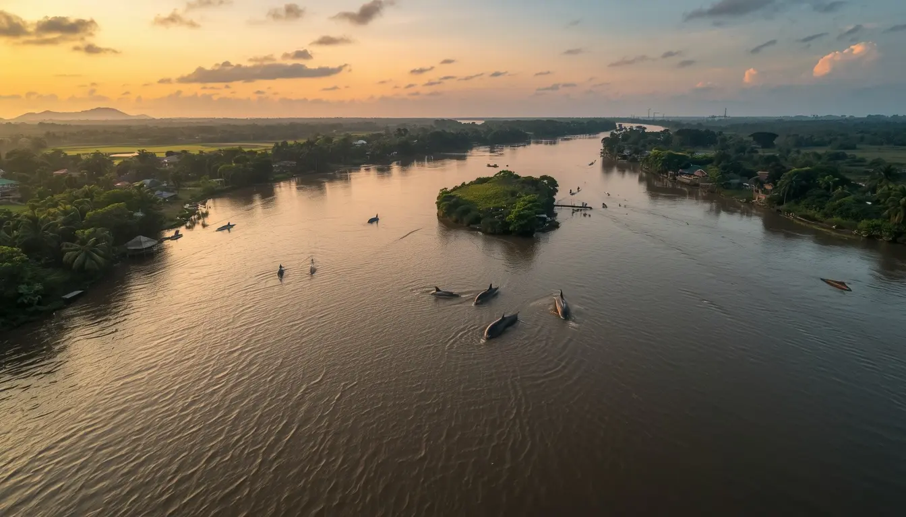
NATURE
Kratie
Home of the rare river dolphins. Watch the gentle Irrawaddy dolphins break the surface of the peaceful Mekong River.
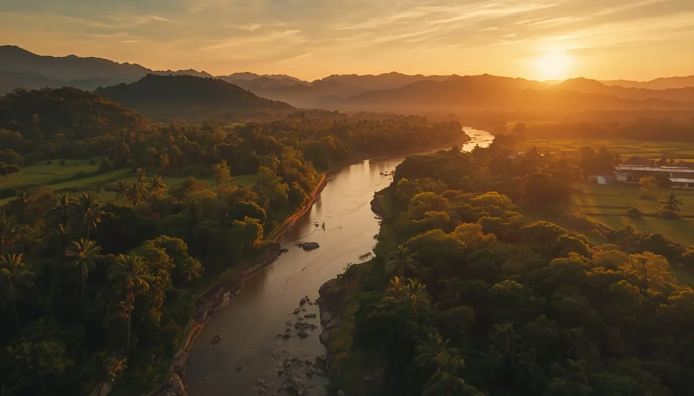
NATURE
Pursat
Floating world and deep mountain ranges. Journey from the massive floating villages of the Tonle Sap to the wild Cardamom peaks.

NATURE
Kampong Chhnang
The heart of clay pottery. Sail through floating fishing communities and watch artisans craft traditional earthenware by hand.

NATURE
Kampong Speu
The land of sugar palms. Climb Cambodia's highest peak amidst rolling pine forests and traditional palm sugar farms.
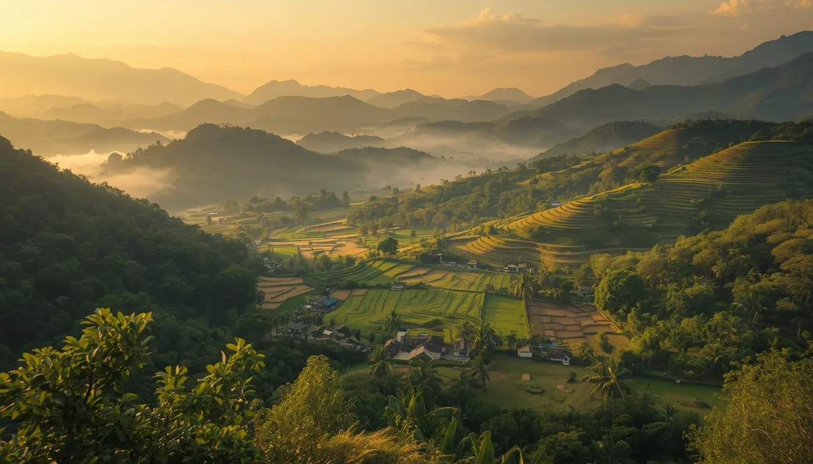
NATURE
Pailin
The gem of the Cardamoms. Discover a former diamond-mining outpost turned into a scenic, fruit-rich mountain escape.

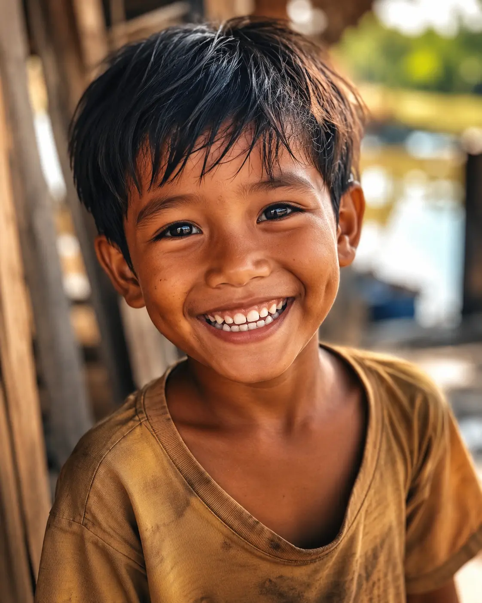
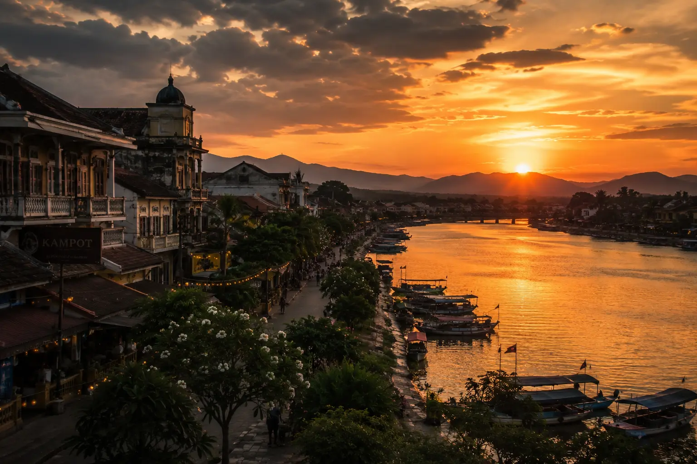

Founded 2026 by VUTHY BOREYVATHANA